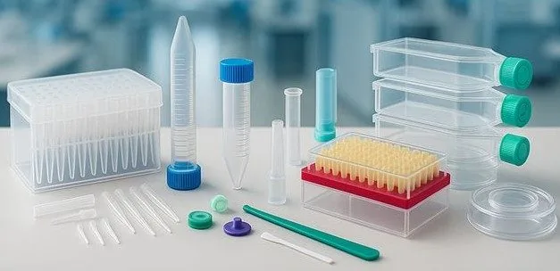
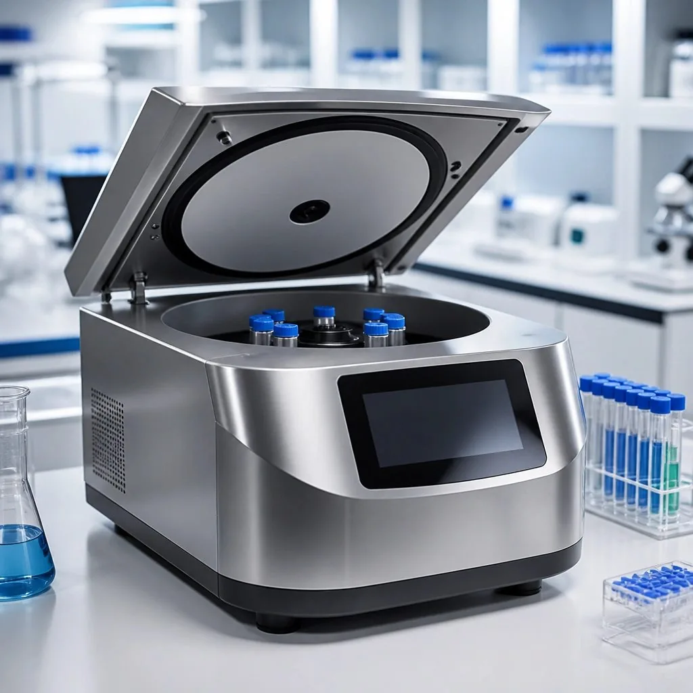
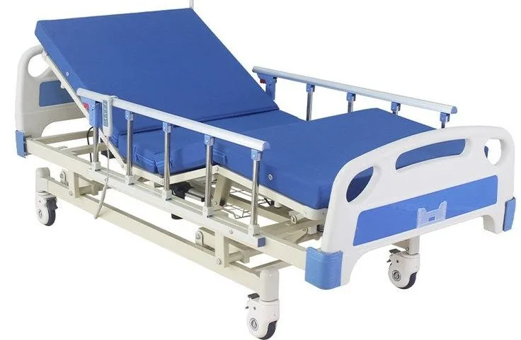
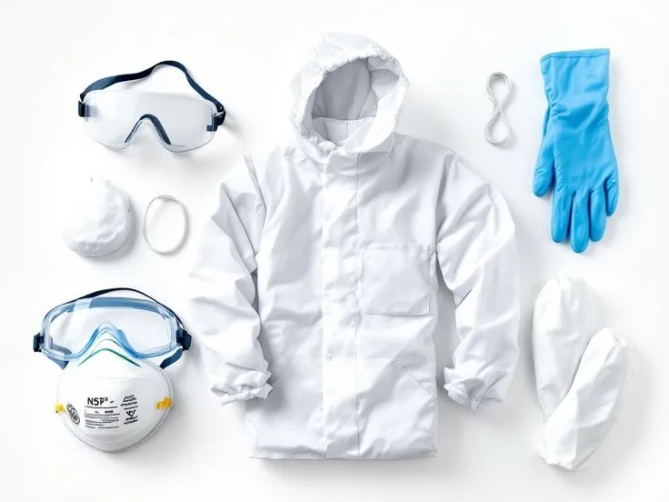

Certified consumables
Reliable daily-use items for clinical and laboratory work.
- Plastics, tubes, tips, and plates
- Sterile and filter options
- Suitable for repeat procurement
We group the catalog around how buyers actually purchase: by use case, specification, and supply priority. That keeps the conversation focused and the quotation process efficient.
These are the product families highlighted in the company profile and the presentation shared by the client.

Reliable daily-use items for clinical and laboratory work.

Equipment for measurement, preparation, and testing.
Supply support for projects, studies, and method work.

Products that support patient comfort and facility readiness.
Supplies for QA, process control, and environmental monitoring.

Protection and disposal items for safer operations.
The same core categories support multiple sectors, but the buying process remains focused and practical.
Clinical units, diagnostic centres, and procurement teams.
Retail healthcare buyers who need dependable supply support.
Teaching laboratories, research groups, and academic departments.
Testing teams that need accurate and repeatable supply.
Products for patient care, diagnostics, and ward support.
Support for practical classes, projects, and lab-based study.
Tools for QA, process checks, and monitoring work.
The process is kept direct so procurement teams can move from inquiry to quotation efficiently.